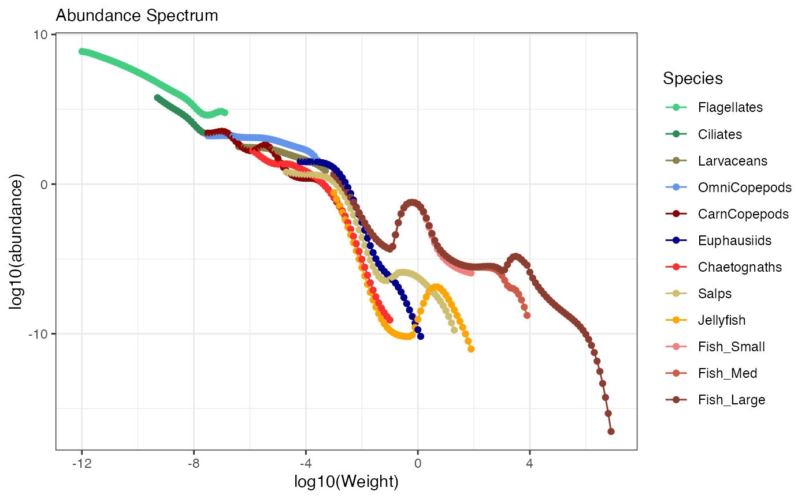
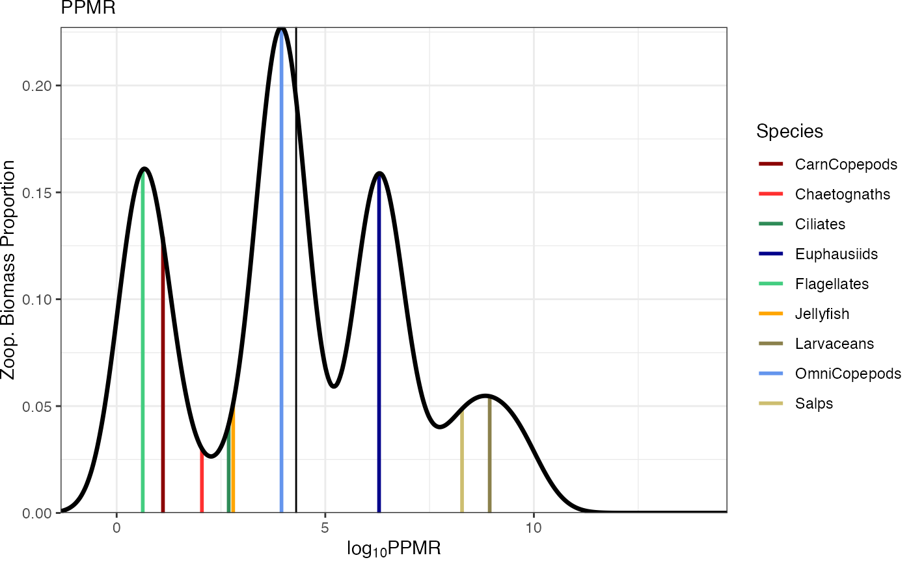

Input Data
ZooMSS requires two sets of input data:
Groups - Contains all taxa-specific parameter values for each model group, including size ranges and functional group properties.
Environmental data - A Time-series dataframe with time series of environmental conditions with
time,sst, andchlcolumns.
Running the default Model
Get the default published Groups dataframe using:
Groups <- getGroups()
#> Using default ZooMSS functional groups. Use getGroups() to customize.Now create an environmental data time-series using the helper
function. This time-series uses a constant sea surface temperature
(sst) and chlorophyll a (chl) with a
0.1 yr-1 timestep (dt).
env_data <- createInputParams(time = seq(0, 100, by = 0.1) ,
sst = 15,
chl = 0.15)
#> ZooMSS input parameters created:
#> - Time points: 1001 (time values provided)
#> - Time steps: 1000 (intervals to simulate)
#> - Time range: 0 to 100 years
#> - dt = 0.1 years
#> - SST range: 15 to 15 deg C
#> - Chlorophyll range: 0.15 to 0.15 mg/m^3We can look at the environment data and check everything is ok with:
plotEnvironment(env_data)Now we run ZooMSS and save every isave timestep to
reduce storage requirements.
mdl <- zoomss_model(input_params = env_data, Groups = Groups, isave = 2)
#> Functional groups validation passed
#> Calculating phytoplankton parameters from environmental time seriesPlotting
The model includes several built-in plotting functions for analysis and visualization.
Time Series Analysis
These plots display total abundance and mean growth/mortality across all size classes through time.
library(patchwork)
p1 <- plotTimeSeries(mdl, by = "abundance", transform = "log10") # Plot abundance time series
p2 <- plotTimeSeries(mdl, by = "growth") # Plot growth rate time series
p3 <- plotTimeSeries(mdl, by = "mortality") # Plot predation mortality time series
wrap_plots(p1, p2, p3, nrow = 3, guides = "collect")We can also plot total biomass through time.
p4 <- plotTimeSeries(mdl, by = "biomass", transform = "log10") + theme(legend.position = "none") # Plot biomass
p5 <- plotTimeSeries(mdl, by = "biomass", type = "stack", transform = "log10") # Plot stacked biomass
p6 <- plotTimeSeries(mdl, by = "biomass", type = "fill") # Plot proportional stacked biomass
wrap_plots(p4, p5, p6, nrow = 3, guides = "collect")Static Plots for a given model time point
Plot mean species-resolved size spectra for the final
n_years.
plotSizeSpectra(mdl, n_years = 10)
#> Averaging final 10 years (50 saved time steps with isave = 2) of abundance from 500 total saved time steps.
Plot predator-prey mass ratios for the idx timestep
plotPPMR(mdl, idx = 500) # Plot final timestep